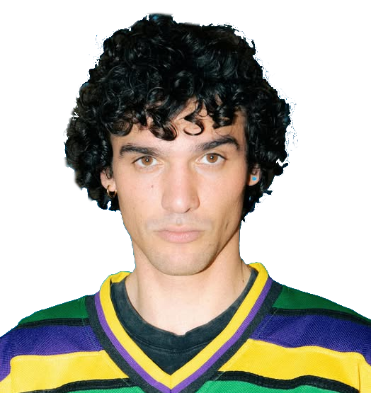
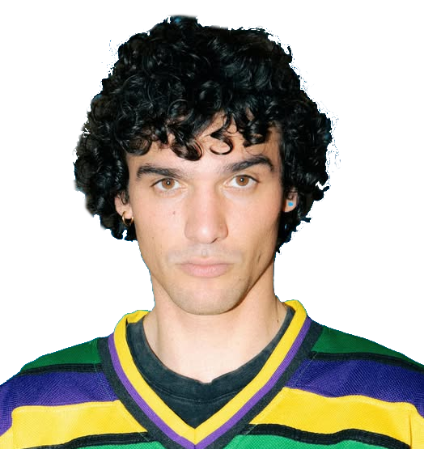

Un linguaggio universale,
quello della musica!
La musica è qualcosa che tutti noi capiamo. Non importa chi sei, dove vivi o che lingua parli: la musica abbatte barriere, arriva dritta al cuore e ti fa entrare in contatto con parti
di te che a volte neppure conoscevi. È come una chiave magica che apre stanze nascoste della tua anima… La verità? La musica è un’amica, un’amica vera. Non ti giudica mai, ti ascolta sempre
quando tu l’ascolti e ti dà esattamente ciò di cui hai bisogno: conforto, carica, spensieratezza. Ti Senti giù? Lei è lì. Vuoi ballare come se nessuno ti stesse guardando? Anche in quel
caso, lei ti copre le spalle. Non serve essere esperti o avere chissà quale talento: basta premere play e lasciarsi trasportare. Una canzone reggaeton, una ballata rock o
un pezzo rap possono migliorarti la giornata. La musica aiuta a sfogarsi dall’ansia, a liberarsi dalle paure, a ricordare momenti belli e
anche a chiudere con quelli brutti. Ti fa sentire meno solo, perché ogni melodia, ogni testo ti fa capire che non sei l’unico al mondo a provare certe emozioni. In fondo, quante volte una canzone è riuscita
a dire quello che provavi meglio di te? È come se parlasse di noi e per noi, no? Ed è proprio questo che la rende unica: la musica ci capisce davvero.
Ma non è solo una pausa dal tempo. La musica è un vero toccasana: dà forza, calma la mente e cura l'anima. Funziona persino in ambito terapeutico, per affrontare momenti
difficili come depressione, ansia o difficoltà nell’apprendimento. Quindi, fidatevi: che sia per ballare, piangere o sognare, ascoltate musica. Sempre. Perché, senza, saremmo tutti un po’ più persi.

“Cos’è per te la musica?”
Intervista al rapper viadanese Glauco
Gianmarco Borettini, noto con il nome d'arte Glauco, è un cantante e rapper originario di Viadana, classe 1998. Ha intrapreso la sua carriera musicale nel
2017, esordendo con il singolo “Affrontami", che ha segnato l'inizio del suo percorso artistico. Nel 2024, Glauco ha conquistato ulteriore visibilità partecipando al programma televisivo “Nuova Scena", una produzione
originale di Netflix dedicata ai nuovi talenti della musica italiana. Noi abbiamo avuto il piacere di intervistarlo, per conoscere un po’ meglio lui e la sua musica…
Ciao Glauco! Cos’è per te la musica?
"La musica per me è espressione; può avere tante sfaccettature e vari modi di essere fatta. Per me è mettere in ordine le emozioni e dare loro sfogo, cercando di rappresentare me stesso e chi sente quello che sento io”.
Perché ti senti così legato a essa?
"Mi sento legato ad essa perché mi permette appunto di dare voce a quello che sento. Mi viene spontaneo, soprattutto nei periodi brutti non riesco a farne a meno. Mi dà forza e anche un obiettivo, più emotivo e profondo che legato ai risultati che posso ottenere o meno. Insomma, mi tiene su”.
Cosa ti ha spinto a iniziare a fare musica?
Ho iniziato con la musica perché sentivo il bisogno di esprimermi in qualche modo. Di allineare il caos che
avevo in testa. In particolare il rap permette
di farlo. E poi perché mi piace
e diverte.

Ciao Glauco! Cos’è per te la musica?
"La musica per me è espressione; può avere tante sfaccettature e vari modi di essere fatta. Per me è mettere in ordine le emozioni e dare loro sfogo, cercando di rappresentare me stesso e chi sente quello che sento io”.
Perché ti senti così legato a essa?
"Mi sento legato ad essa perché mi permette appunto di dare voce a quello che sento. Mi viene spontaneo, soprattutto nei periodi brutti non riesco a farne a meno. Mi dà forza e anche un obiettivo, più emotivo e profondo che legato ai risultati che posso ottenere o meno. Insomma, mi tiene su”.
Cosa ti ha spinto a iniziare a fare musica?
Ho iniziato con la musica perché sentivo il bisogno di esprimermi in qualche modo. Di allineare il caos che
avevo in testa. In particolare il rap permette
di farlo. E poi perché mi piace
e diverte.

Per me rappresenta libertà, espressione, emozioni, sfogo. Tutto quello che c'è dentro e sente il bisogno di uscire”.
C'è qualcuno che ti ha ispirato?
Non saprei, un esempio per me è Massimo Pericolo per il percorso che ha fatto su di sé. Anche Marracash; ma stimo molto Tedua e Ernia. Poi sicuramente quello che ho ascoltato negli anni mi ha ispirato molto, in particolare i testi con molta argomentazione.
Sei grato per ciò che hai raggiunto?
"Essere grati è difficile, non è il risultato in sé a renderti grato. La gratitudine è un qualcosa che va coltivato ogni giorno nelle piccole cose, ed è molto difficile. C'è da lavorarci. Al giorno d'oggi sembra che tu debba per forza riuscire, ma in realtà il vero goal è fare quello che ti piace ed esserne felice. Essere felici dei piccoli passi. Essere sé stessi è la chiave e finora non ho ancora avuto il coraggio di farlo del tutto, ma lo farò. Sono contento di avere persone che mi seguono, in particolare in zona, e di essere un "esempio" per chi vuole. Grato anche di dare l'idea che si possa fare musica o seguire una passione anche se si viene da un paese. Detto ciò, ho anche un lato più "materialista".
Non mi accontento e non sono ancora soddisfatto dei numeri che ho ottenuto, chiaramente. La strada è lunga, ma spero di avere più riscontri e allo stesso tempo
di fare luce a chi vuole. Dei pezzi nuovi che usciranno nel 2025 sono felice e grato perché li sento miei”.
C'è qualcuno che ti ha ispirato?
Non saprei, un esempio per me è Massimo Pericolo per il percorso che ha fatto su di sé. Anche Marracash; ma stimo molto Tedua e Ernia. Poi sicuramente quello che ho ascoltato negli anni mi ha ispirato molto, in particolare i testi con molta argomentazione.
Sei grato per ciò che hai raggiunto?
"Essere grati è difficile, non è il risultato in sé a renderti grato. La gratitudine è un qualcosa che va coltivato ogni giorno nelle piccole cose, ed è molto difficile. C'è da lavorarci. Al giorno d'oggi sembra che tu debba per forza riuscire, ma in realtà il vero goal è fare quello che ti piace ed esserne felice. Essere felici dei piccoli passi. Essere sé stessi è la chiave e finora non ho ancora avuto il coraggio di farlo del tutto, ma lo farò. Sono contento di avere persone che mi seguono, in particolare in zona, e di essere un "esempio" per chi vuole. Grato anche di dare l'idea che si possa fare musica o seguire una passione anche se si viene da un paese. Detto ciò, ho anche un lato più "materialista".
Grazie, Glauco, e in bocca al lupo!
Musica